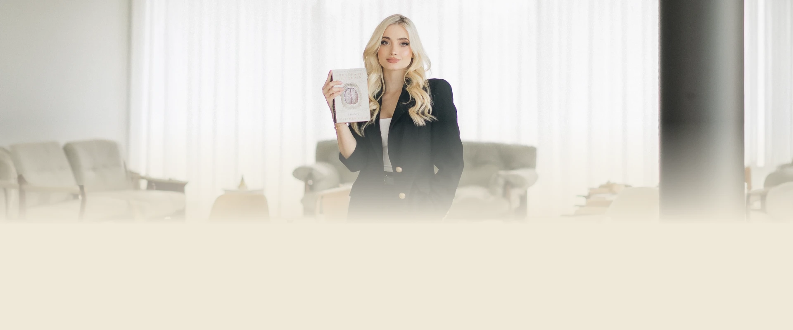

Paleta de cores
Medida no navegador: fundos ponderados pela área ocupada, textos pela quantidade de caracteres. Destaques reúnem cores saturadas e fundos de botão.
Fundos
#CCC0A8
Fundo · 47.3%
rgb(204, 192, 168)
rgb(204, 192, 168)
#EFE8D8
Fundo · 42.9%
rgb(239, 232, 216)
rgb(239, 232, 216)
#B59E7F
Fundo · 9.8%
rgb(181, 158, 127)
rgb(181, 158, 127)
Textos
#5A483A
Texto · 55.9%
rgb(90, 72, 58)
rgb(90, 72, 58)
#FFFFFF
Texto · 44.1%
rgb(255, 255, 255)
rgb(255, 255, 255)
Destaques
#CCC0A8
Destaque
rgb(204, 192, 168)
rgb(204, 192, 168)
#B59E7F
Destaque
rgb(181, 158, 127)
rgb(181, 158, 127)
Gradientes
linear-gradient(140deg, rgb(204, 192, 168) 0%, rgb(224, 216, 197) 50%, rgb(204, 192, 168) 100%)linear-gradient(90deg, rgb(90, 72, 58) 0%, rgb(115, 96, 79) 50%, rgb(90, 72, 58) 100%)Tipografia
Montserrat · Aa Bb Cc 0123
85% do texto · Se a sua cabeça não desliga, esta página é para você.Playfair Display · Aa Bb Cc 0123
15% do texto · Se a sua cabeça não desliga, esta página é para você.Escala usada (desktop 1440px)
| Tamanho | Peso | Família | Amostra |
|---|---|---|---|
| 34px | 500 | Playfair Display | Texto de exemplo |
| 30px | 500 | Playfair Display | Texto de exemplo |
| 28px | 500 | Playfair Display | Texto de exemplo |
| 22px | 400 | Montserrat | Texto de exemplo |
| 22px | 600 | Montserrat | Texto de exemplo |
| 20px | 400 | Playfair Display | Texto de exemplo |
| 20px | 500 | Montserrat | Texto de exemplo |
| 18px | 400 | Montserrat | Texto de exemplo |
| 18px | 500 | Montserrat | Texto de exemplo |
| 16px | 400 | Montserrat | Texto de exemplo |
Mobile (390px): 33px/500, 27px/500, 25px/500, 23px/400, 20px/500, 18px/500, 16px/600, 16px/500 · H1 no mobile: sem h1 semântico
Tags
| Tag | Família | Tamanho | Peso | Altura de linha | Espaçamento | Caixa | Cor |
|---|---|---|---|---|---|---|---|
| <h2> | Montserrat | 18px | 400 | 25.2px | normal | none | #5A483A |
Botões
Recriados com os estilos computados reais. Efeitos de hover e animação não aparecem aqui; veja a seção de animações.
ENTRE EM CONTATO
fundo #00000000 · texto #FFFFFF · raio 0px · padding 20px 36px · 18px/500 none · 1x na páginaAGENDAR SESSÃO
fundo #00000000 · texto #FFFFFF · raio 0px · padding 20px 36px · 16px/500 none · 1x na páginaCards e containers
Nenhum card identificado.
Bordas, raios e sombras
10%
Sombras
rgba(0, 0, 0, 0.37) 6px 8px 8px -2pxrgba(99, 84, 63, 0.23) 8px 9px 21px 0pxrgba(0, 0, 0, 0.13) 8px 9px 10px 0pxEspaçamentos
- Largura do conteúdo mais comum: 1024px
- Padding vertical das seções (topo/base): 0px/0px (6x)
- Gaps mais usados (flex/grid): 20px, 21px, 5px
- Altura total da página: 3336px em 6 seções
Estrutura e ritmo de cores das seções
Cada faixa é uma seção de topo, com altura proporcional e a cor ou imagem de fundo real.
1. hero Psicoterapia baseada em evidências, conduzida com acolhiment 762px · padding 0px/0px
2. para-quem-e Ofereço um espaço seguro para você olhar com mais cuidado pa 533px · padding 0px/0px
3. sobre Rigor científico. Olhar humano. 119px · padding 0px/0px
4. como-funciona Andressa Darold 1158px · padding 0px/0px
5. faq Perguntas Frequentes: 467px · padding 0px/0px
6. rodape Psicóloga Andressa Darold | Psicóloga Clínica 297px · padding 0px/0px
Animações, ícones e bibliotecas
- Keyframes próprios: nenhum keyframe próprio
- Animações de entrada do Elementor: nenhuma
- Classes de scroll reveal da casa: nenhuma
- Ícones: 34 SVG, 0 ícones de fonte
- Bibliotecas e tags detectadas: ga4, google-ads, happy-addons, jquery, lenis, lottie, meta-pixel, swiper
Snippets da biblioteca presentes nesta página
Imagens do site

